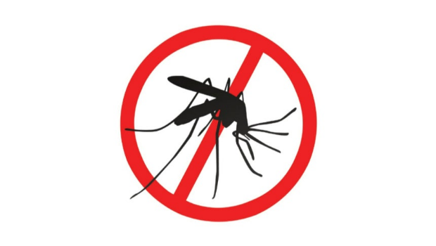

8/14(금) · 기준 2026-08-13 22:00 ~ 2026-08-14 06:00
엑셀 다운로드
"이미지 다운로드"를 누르거나, 이미지를 길게 눌러 저장한 뒤 카톡으로 보내세요.


![[연합뉴스] 세계 공항 순위](images/graphics/연합뉴스_01.jpg)
![[연합뉴스] 푸틴, '영유권 분쟁' 쿠릴열도 방문](images/graphics/연합뉴스_02.jpg)
![[연합뉴스] 북한군 우크라이나전 추가 파병 계획 주요 내용](images/graphics/연합뉴스_03.jpg)
![[연합뉴스] 8·13대책 수도권 아파트 착공·입주 물량 추이](images/graphics/연합뉴스_04.jpg)
![[연합뉴스] 서울 주요 지역 아파트값 상승률 추이](images/graphics/연합뉴스_05.jpg)
![[연합뉴스] 2027년까지 수도권 공공분양주택 공급 계획](images/graphics/연합뉴스_06.jpg)
![[연합뉴스] 8·13대책 부동산 실수요자 핀셋 지원 주요 내용](images/graphics/연합뉴스_07.jpg)
![[뉴스1] [그래픽] 코스피·코스닥 추이](images/graphics/뉴스1_08.jpg)
![[뉴스1] [오늘의 증시] 8월 13일 코스피 코스닥](images/graphics/뉴스1_09.jpg)
![[뉴스1] [오늘의 그래픽] 서울 염창·남양주 등 2.7만호…연내 7.3만+α 추가](images/graphics/뉴스1_10.jpg)
![[뉴스1] [그래픽] 8·13 부동산 대책 주택공급 촉진·청년 등 실수요자를 위한 방안](images/graphics/뉴스1_11.jpg)
![[뉴스1] [그래픽] 8·13 부동산 대책 공공택지 최단기 착공모델 구축 방안](images/graphics/뉴스1_12.jpg)
![[뉴스1] [그래픽] 2027년 주요 공공분양 공급지역](images/graphics/뉴스1_13.jpg)
![[뉴스1] [그래픽] 8·13 부동산 대책결혼 페널티 개선 대책](images/graphics/뉴스1_14.jpg)
![[뉴스1] [그래픽] 8·13 부동산 대책 부담가능한 공공분양 모델 도입](images/graphics/뉴스1_15.jpg)
![[뉴스1] [그래픽] 8·13 부동산 대책 재개발·재건축 속도 제고 방안](images/graphics/뉴스1_16.jpg)
![[뉴스1] [그래픽] 8·13 부동산 대책 전월세 안심신탁사업 추진](images/graphics/뉴스1_17.jpg)
![[뉴스1] [그래픽] 정당 지지도 추이](images/graphics/뉴스1_18.jpg)
![[뉴스1] [그래픽] 이재명 대통령 국정수행 평가](images/graphics/뉴스1_19.jpg)


![제네시스, 내달 출시 GV80 탑재 차세대 하이브리드 시스템 공개 [CarTalk]](images/article_10.png)


{kind=link}